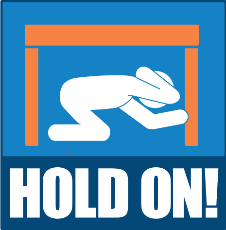

An earthquake is a sudden and rapid shaking of the ground caused by the shifting of rocks deep
underneath the earth’s surface. Earthquakes can happen without
warning and result in injuries and damage to property and roads.
Earthquakes can:
Happens in only particular places
Due to movement of techtonic plates
Causes cracks in earth thus destroying buildings
WHAT SHOULD YOU DO DURING AN EARTHQUAKE?
THE THREE BASIC PRINCIPLES TO BE FOLLOWED DURING AN EARTQUAKE
1.YOU SHOLUD PROTECT YOUR SELF FROM DROPPING MATERIALS
2.FIND A COVER TO PROTCET YOUR SELF
3.HOLD ON TO SOME STEADY STUFF
**The most important thing to remember is DON'T PANIC!!!
COVER your head and neck with one arm and hand
■ If a sturdy table or desk is nearby, crawl underneath it for shelter
■ If no shelter is nearby, crawl next to an interior wall
■ Stay on your knees; bend over to protect vital organs

HOLD ON until shaking stops
■ Under shelter hold on to it with one hand;
■ Be ready to move with your shelter if it shifts
■ If there is no shelter hold on to your head and neck with both arms and hands.
DROP where you are, onto your hands and knees.
■ This position protects you from being knocked down
■ It also allows you to stay low and crawl to shelter if nearby
SOME GIFS TO SHOW THE DEMONSTRATION
Prepare before an Earthquake
■ Practice Drop, Cover, and Hold On with family and coworkers.
■ Secure heavy items in your home like bookcases, refrigerators, televisions, and objects that hang on walls.
Store heavy and breakable objects on low shelves.
■ Create a family emergency communications plan that has an out-of-state contact.
Plan where to meet if you get separated.
■ Consider obtaining an earthquake insurance policy. A standard homeowner’s
insurance policy does not cover earthquake damage.
■ Consider making improvements to your building to fix structural issues that
could cause your building to collapse during an earthquake.
QUICK TIP
Inform about these plans and
safety procedures to all your neighbours.
DEMONSTRATION ON BUILDING EARTHQUAKE RESISTANT BUILDINGS
FOLLOW THESE STEPS TO BUILD YOUR EARTHQUAKE RESISTANT BULDING
Step 1:
Design ground beams for earthquake-resistant housing.
Join steel beams together by the feet and allow them to go
outside the line of the building to decrease the chance of
the structure overturning.
Step 2:
Build floors with a light material similar to the roof. Use plywood,
chipboard or plain timber with joists bolted
firmly to the floor for earthquake-resistant housing.
Step 3:
Ensure that buildings resist sideways pressure. Build the roof with a
lightweight material. Brace the building
diagonally to resist sideways loads of debris.
Step 4:
Construct wood-frame housing. Although it's lightweight, wood provides
a strong resistance to earthquakes. Tie wall wells to the house foundation
when building and nail wood firmly to studs to increase the earthquake resistance
of the structure. Use a shear wall construction with studs forming
the wall's shell and horizontal joists making up the
floors and rafters supporting the roof.
Step 5:
Establish a large panel system for residences. Set up concrete panels vertically
and horizontally to surround the rooms in a apartment building.
These panels uphold the building's structural integrity along
with vertical and horizontal floor panels.
Step 6:
Use a modular building system. Stack ready-made boxes and connect them together.
The walls that form resist shaking caused by earthquakes from
both directions. Pipes as well as wall and floor
finishes fit in an earthquake-resistant concrete box.